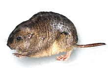
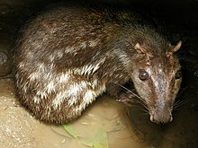
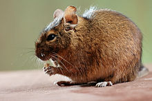
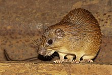
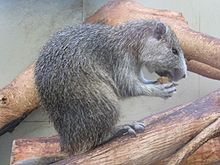
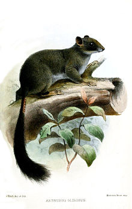
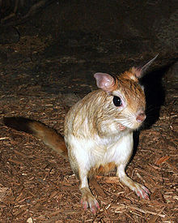
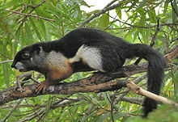
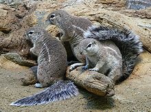

|  |
tuco-tuco |
A tuco-tuco is a neotropical rodent in the family Ctenomyidae.[1][2] Tuco-tucos belong to the only living genus of the family Ctenomyidae, Ctenomys, but they include approximately 60 different species. The common name, "tuco-tuco" comes from the "tuc-tuc" sound they make while they dig their burrows |
|  |
paca |
A paca is a member of the genus Cuniculus of ground-dwelling, herbivorous rodents in South and Central America. It is the only genus in the family Cuniculidae.[4] They are large rodents with dots and stripes on their sides, short ears, and barely visible tails. They are also referred to as "gibnuts" or "royal rats". |
|  |
Octodontidae |
Octodontidae is a family of rodents, restricted to southwestern South America. Thirteen species of octodontid are recognised, arranged in nine genera. The best known species is the common degu, Octodon degus. |
|  |
Echimyidae |
Echimyidae is the family[2] of neotropical spiny rats and their fossil relatives.[3] This is the most species-rich family of hystricognath rodents.[4] It is probably also the most ecologically diverse, with members ranging from fully arboreal to terrestrial to fossorial habits.[4] They presently exist mainly in South America; three members of the family also range into Central America |
|  |
Hutias
|
Hutias are moderately large cavy-like rodents of the family Capromyidae that inhabit the Caribbean Islands. Twenty species of hutia have been identified, and at least a third are extinct. Only Desmarest's hutia and the prehensile-tailed hutia remain common and widespread; all other extant species are considered threatened by the IUCN. Their larger relatives, the giant hutias of the family Heptaxodontidae, are entirely extinct. |
|  |
Anomaluridae |
The Anomaluridae are a family of rodents found in central Africa.[2] They are known as anomalures or scaly-tailed squirrels. The seven extant species are classified into three genera. Most are brightly coloured. |
|  |
Pedetidae |
The Pedetidae are a family of mammals from the rodent order.[3][4][5][6][7][8] The two living species, the springhares, are distributed throughout much of southern Africa and also around Kenya, Tanzania, and Uganda.[9] Fossils have been found as far north as Turkey.[10] Together with the anomalures, Pedetidae forms the suborder Anomaluromorpha. The fossil genus Parapedetes is also related. |
 |
Flying squirrels
|
Flying squirrels (scientifically known as Pteromyini or Petauristini) are a tribe of 50 species of squirrels in the family Sciuridae. They are not capable of flight in the same way as birds or bats but are able to glide from one tree to another with the aid of a patagium, a furry, parachute-like membrane that stretches from wrist to ankle. |
|  |
Callosciurinae
|
The Callosciurinae are an Asiatic subfamily of squirrels containing over 60 species, mostly found in South East Asia. It is named after the genus Callosciurus, which means "beautiful squirrels". |
|  |
Xerinae
|
The Xerinae comprise a subfamily of squirrels, many of which are highly terrestrial. It includes the tribes Marmotini (marmots, chipmunks, prairie dogs, and other Holarctic ground squirrels), Xerini (African and some Eurasian ground squirrels), and Protoxerini (African tree squirrels). |